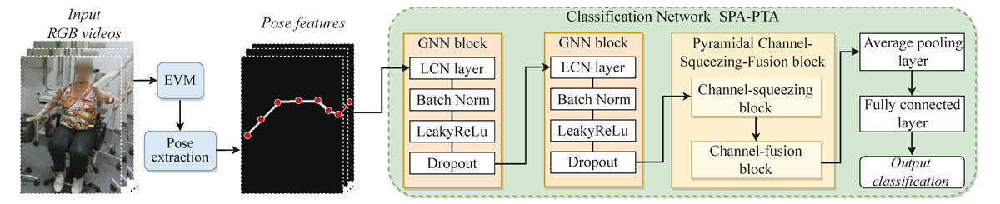

Haozheng Zhang
I am now an PhD researcher in Machine Learning and Deep Learning with a broad research horizon and teamwork experience, including human-centric data sequence analysis, frequency analysis & modelling, trajectory prediction, gaze scan path prediction, image denoising and inpainting, and diffusion models. Existing publications include a top-tier conference (MICCAI) paper. Strong quantitative background with a PhD in computer science, a master's degree in data analytics and a bachelor's degree in mathematics. Skilled in integrating mathematical theorems and human knowledge into DL models for performance and interpretability improvement.
Email /
Google Scholar /
LinkedIn /
News
03/2024, We will submit two papers to ECCV 2024.
02/2024, I passed my PhD viva at Durham Univeristy with minor revision, examined by Prof Hyung Jin Chang. and
Prof Frederick Li.
12/2023, The journal version of Parkinson's Tremor Diagnosis Project. has been accepted by the MICCAI-special issue at
International Journal of Computer Assisted Radiology and Surgery (IJCARS), 2024.
11/2023, We submit a paper to CVPR 2024.
08/2023, One paper about Graph Learning for Treatment Response Prediction. has been accepted by
the 2023 International Conference on Neural Information Processing (ICONIP).
12/2022, One paper about Denoising Diffusion Probabilistic Models. has been accepted by
the 2023 International Conference on Computer Graphics Theory and Applications (GRAPP).
11/2022, The journal extention of cerebral palsy prediction project. has been accepted by
Software Impacts.
09/2022, One poster about Denoising Diffusion Probabilistic Models. has been accepted by
the 2022 ACM SIGGRAPH Conference on Motion, Interaction and Games (MIG).
07/2022, I have given an oral presentation for our paper Cerebral Palsy Prediction with Frequency Attention Informed Graph Convolutional Networks. at
the 2022 International Conference of the IEEE Engineering in Medicine and Biology Society (EMBC).
05/2022, Our paper Pose-Based Tremor Classification for Parkinson's Disease Diagnosis from Video. has received a top 13% ranking with a provitional acceptance in
MICCAI 2022.
Recent Projects
My recent researches emphasizes interpretable prediction systems, frequency analysis, human-centric data sequence analysis, and data sequence denoising. My past PhD projects involve these methods into human data modelling with deep learning for disease diagnosis, such as interpretable Parkinson's tremor analysis and cerebral palsy prediction.
Pose-Based Tremor Type and Level Analysis for Parkinson's Disease from Video

Paper
Current methods for diagnosis of PD rely on clinical examination. The accuracy of diagnosis ranges between 73% and 84%, and is influenced by the experience of the clinical assessor. Hence, an automatic, effective and interpretable supporting system for PD symptom identification would support clinicians in making more robust PD diagnostic decisions. In this way, we propose to analyze Parkinson's tremor (PT) to support the analysis of PD, since PT is one of the most typical symptoms of PD with broad generalizability. To realize the idea, we present SPA-PTA, a deep learning-based PT classification and severity estimation system that takes consumer-grade videos of front-facing humans as input. The core of the system is a novel attention module with a lightweight pyramidal channel-squeezing-fusion architecture that effectively extracts relevant PT information and filters noise. It enhances modeling performance while improving system interpretability
Experience
PhD Researcher at Durham University, 04/2020 - Present.
Project: Machine learning & deep learning based computer vision researches with a broad horizon in biomedical engineering (disease diagnosis/prediction), time series prediction, gaze trajectory prediction, image denoising and inpainting.
Supervisor: Prof Hubert, P.H. Shum.
Teaching Module DemonstatorTeaching Module Demonstator at Durham University, 01/2022 - 09/2023.
Undergraduate Module: Data Science, AI Practice.
Postgraduate Module: Programming for Data Science.
SCA 2022 Supporting Chair at Durham University, 01/2022 - 09/2022.
The supporting chair of the 21ST ACM SIGGRAPH / EUROGRAPHICS SYMPOSIUM ON COMPUTER ANIMATION (SCA 2022).
- Designed and built a conference website; managed the website's daily maintenance work.
- Manage the team support for the conference attendances' visa application and travel grants supports.
- Co-operated with conference chairs to host the hybrid conference programs.
Summer-term Research Assistant at Imperial College London, 06/2018 - 08/2018.
Participated in the research of stochastic parameterisations for ocean models, specifically, the frequency features analysis and the data-adaptive harmonic power spectrum modelling.
Trading Strategy Development (Internship) at Shanghai SHENGYUN AMC., 06/2017 - 08/2017.
- Studied the company's internal quantamental trading strategies, including CTA (Commodity Trading Advisor) strategies, statistical arbitrage, and other quantamental approaches. Participated in the research and development of stock market trading strategies, focusing on Multifactor Models and Portfolio Optimization.
- Participated in implementing algorithms for machine learning-based trading strategies.
Research
I'm interested in devleoping efficient models for computer vision (e.g. classification, detection, and super-resolution) using pruning, quantization, distilaltion, NAS, etc.
Conference Papers:
- Correlation-Distance Graph Learning for Treatment Response Prediction from rs
Francis Xiatian Zhang, Sisi Zheng, Hubert P. H. Shum, Haozheng Zhang, Nan Song, Mingkang Song, Hongxiao Jia
ICONIP 2023 | paper
- Unifying Human Motion Synthesis and Style Transfer with Denoising Diffusion Probabilistic Models
Ziyi Chang, Edmund J. C. Findlay, Haozheng Zhang, Hubert P. H. Shum
GRAPP 2023 | paper
- Pose-Based Tremor Classification for Parkinson's Disease Diagnosis from Video
Haozheng Zhang, Edmond S. L. Ho, Francis Xiatian Zhang, Hubert P. H. Shum
MICCAI 2022 | paper
- Cerebral Palsy Prediction with Frequency Attention Informed Graph Convolutional Networks
Haozheng Zhang, Edmond S. L. Ho, Hubert P. H. Shum
EMBC 2022 | paper
- Denoising Diffusion Probabilistic Models for Styled Walking Synthesis
Edmund J. C. Findlay, Haozheng Zhang, Ziyi Chang, Hubert P. H. Shum
MIG Posters 2022 | paper
Journal Papers:
- Pose-Based Tremor Type and Level Analysis for Parkinson's Disease from Video
Haozheng Zhang, Edmond S. L. Ho, Francis Xiatian Zhang, Silvia Del Din, Hubert P.H. Shum
IJCARS 2024 | paper
- CP-AGCN: Pytorch-Based Attention Informed Graph Convolutional Network for Identifying Infants at Risk of Cerebral Palsy
Haozheng Zhang, Edmond S. L. Ho, Hubert P. H. Shum
SIMPAC 2022 | paper
IT Skills
Python, Matlab, R, C++, SQL, VBA, Excel, SPSS, Tableau, Power BI
Review Activities
CVPR 2024
MICCAI 2023
BMVC 2023, 2021
Thanks to Yunhe Wang, who kindly shared the open-source code for the website template.